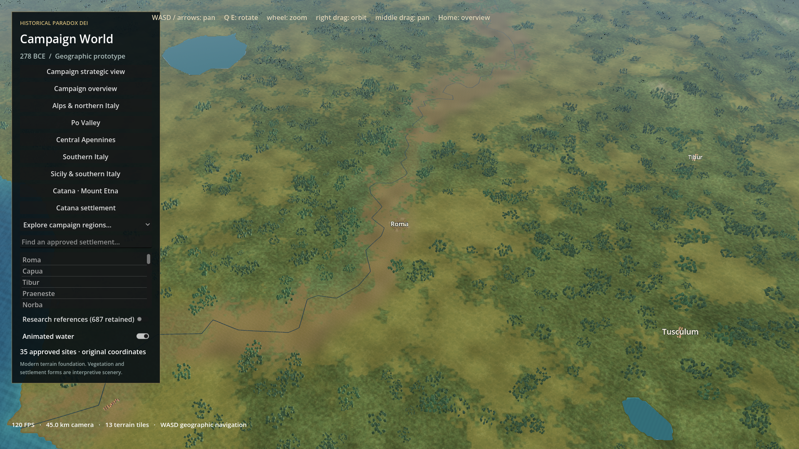
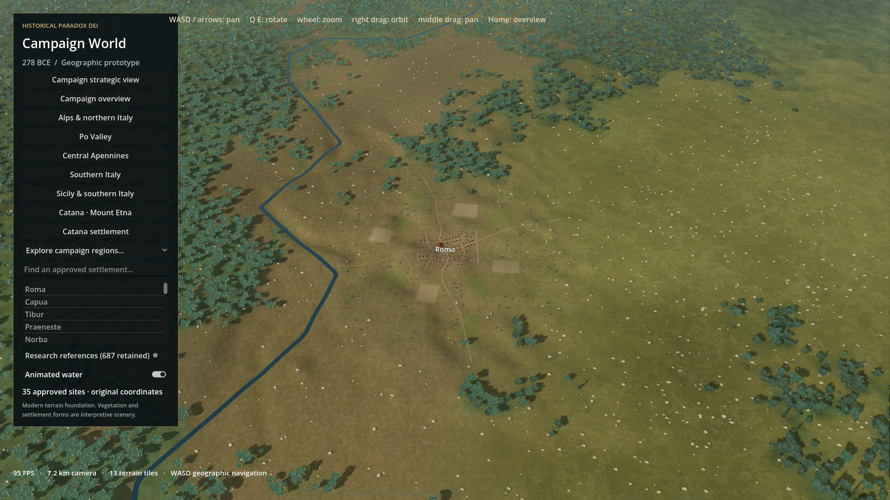
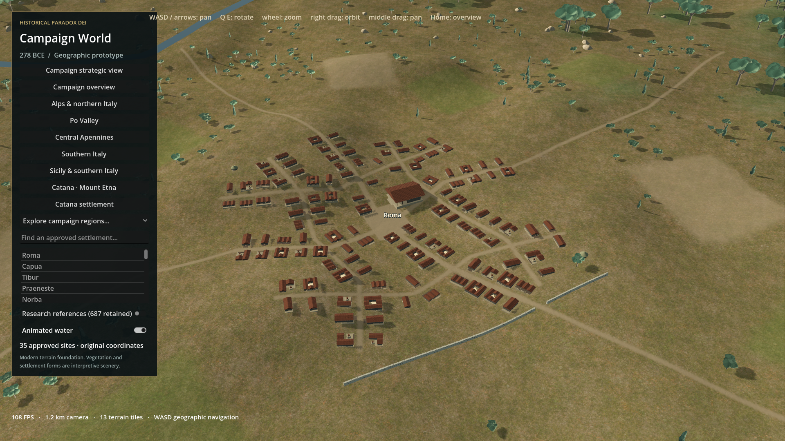
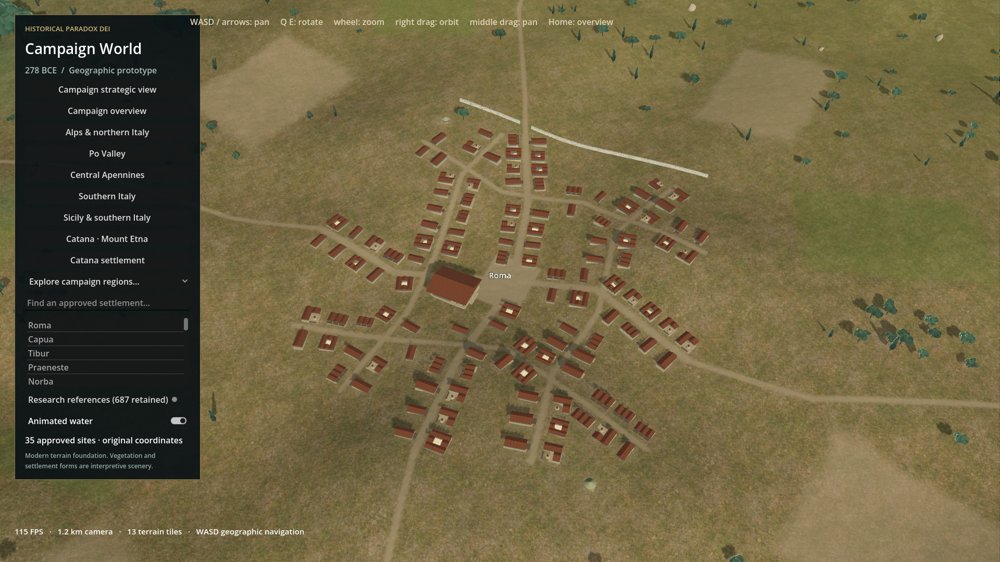
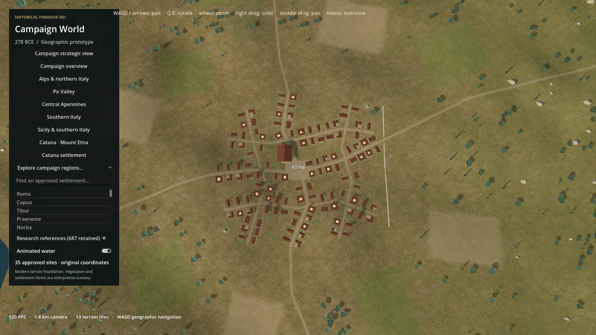
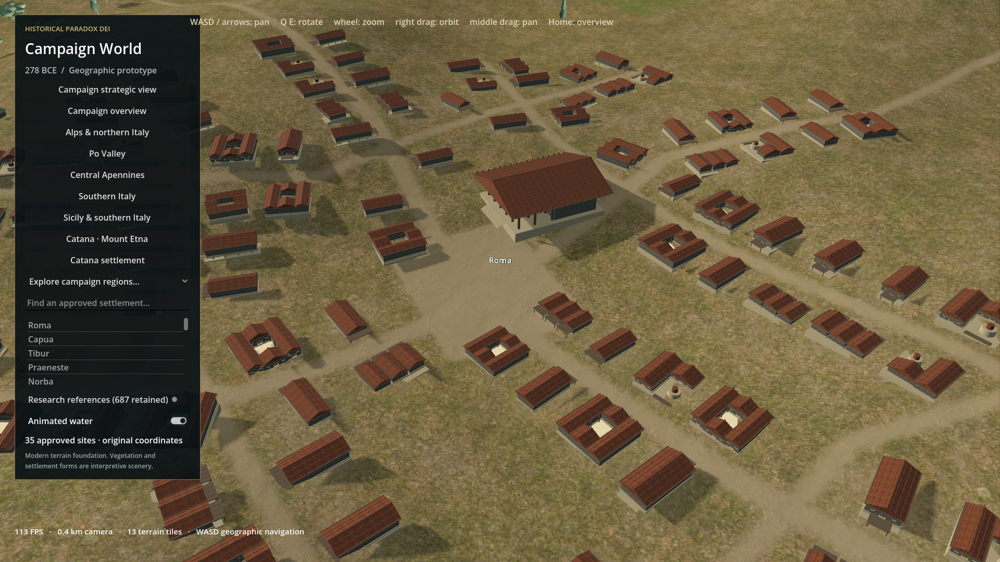
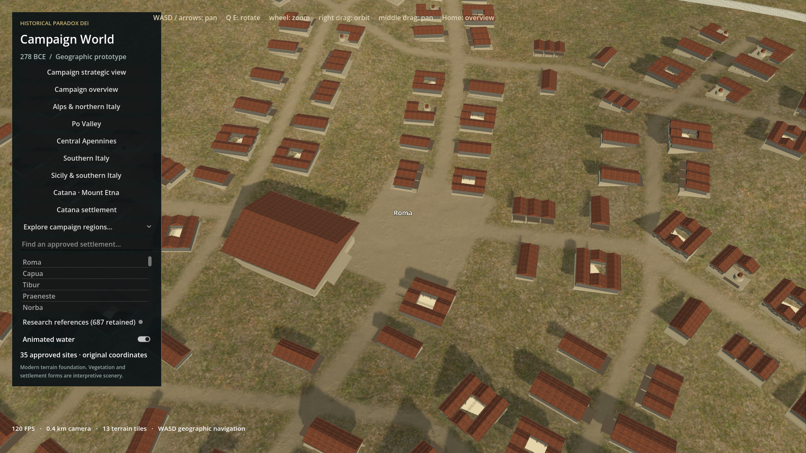

Strategic 45 km
Same geographic focus, distance, pitch, yaw and FOV. Vertical camera offset changed by 0.00 m to follow the finer terrain. Left 2026-10-28T01:54:53Z; right 2026-10-28T15:19:11Z.



The same 121 structures and building meshes, with connected approaches, source-supported local relief, terrain-painted cultivation/paths, a joined stone wall and varied hinterland vegetation. Interpretive art, not a surveyed 278 BCE reconstruction. No artistic approval is asserted.
Final b63b6ed68d3b0b728a049376e6dcc604cd423e6018f8ac0167689e91acd706f4. Measurements / Report and limitations. Images are original 1920x1080 Godot output, not retouched.
Same geographic focus, distance, pitch, yaw and FOV. Vertical camera offset changed by 0.00 m to follow the finer terrain. Left 2026-10-28T01:54:53Z; right 2026-10-28T15:19:11Z.

Same geographic focus, distance, pitch, yaw and FOV. Vertical camera offset changed by -22.89 m to follow the finer terrain. Left 2026-10-28T01:55:15Z; right 2026-10-28T15:19:34Z.


Same geographic focus, distance, pitch, yaw and FOV. Vertical camera offset changed by -22.89 m to follow the finer terrain. Left 2026-10-28T01:55:37Z; right 2026-10-28T15:19:55Z.


Same geographic focus, distance, pitch, yaw and FOV. Vertical camera offset changed by -22.89 m to follow the finer terrain. Left 2026-10-28T01:56:01Z; right 2026-10-28T15:20:16Z.


Same geographic focus, distance, pitch, yaw and FOV. Vertical camera offset changed by -22.89 m to follow the finer terrain. Left 2026-10-28T01:56:21Z; right 2026-10-28T15:20:36Z.



